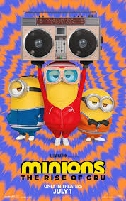
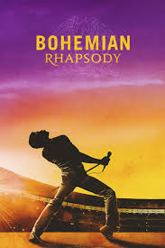

With the price on his head ever increasing, legendary hit man John Wick takes his fight against the High Table global as he seeks out the most powerful players in the underworld, from New York to Paris to Japan to Berlin
Nanno is a mysterious and clever girl who should be avoided when she's in the area. She transfers to different schools, and when she lands at a new institution, she exposes the lies and misdeeds of the students and faculty at every turn. The girls Nanno encounters often want to try to destroy her, but she always has the upper hand. When a student with a girlfriend gets mistakenly linked to Nanno, he becomes a social media sensation. After the truth about Nanno's high school life is revealed, she makes sure there are no happy endings.

In the 1970s, young Gru tries to join a group of supervillains called the Vicious 6 after they oust their leader -- the legendary fighter Wild Knuckles. When the interview turns disastrous, Gru and his Minions go on the run with the Vicious 6 hot on their tails. Luckily, he finds an unlikely source for guidance -- Wild Knuckles himself -- and soon discovers that even bad guys need a little help from their friends
Life is good for all the food items that occupy the shelves at the local supermarket. Frank (Seth Rogen) the sausage, Brenda (Kristen Wiig) the hot dog bun, Teresa Taco and Sammy Bagel Jr. (Edward Norton) can't wait to go home with a happy customer. Soon, their world comes crashing down as poor Frank learns the horrifying truth that he will eventually become a meal. After warning his pals about their similar fate, the panicked perishables devise a plan to escape from their human enemies.

Puss in Boots discovers that his passion for adventure has taken its toll when he learns that he has burnt through eight of his nine lives. Puss sets out on an epic journey to find the mythical Last Wish and restore his nine lives.

Freddie Mercury -- the lead singer of Queen -- defies stereotypes and convention to become one of history's most beloved entertainers. The band's revolutionary sound and popular songs lead to Queen's meteoric rise in the 1970s. After leaving the group to pursue a solo career, Mercury reunites with Queen for the benefit concert Live Aid -- resulting in one of the greatest performances in rock 'n' roll history.